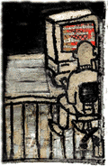
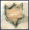
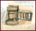

The unmarked government van slows and stops. The agent inside puts down his coffee and starts in on the day's work: monitoring John Doe's computer, 10 blocks away. John is busy working on his Mac with the curtains pulled against the morning sunlight. The agent watches with great interest as John reads through the cryptography and privacy newsgroups, then downloads some fiction from alt.sex.stories. Everything that flashes by on John's monitor is videotaped for later review: the balance and payees of John's checking account, some decrypted e-mail that John assumed was private and an illegal copy of Adobe Photoshop.
Is this scenario making you take stock of what appears on your computer screen? We all indulge in vices large and small, mentally shrugging, "Who will ever know?" In everyday life, we usually manage to keep our transgressions secret, but when it comes to information flitting across our computer screens, the answer is that there are no secrets, thanks to a relatively new, obscure form of surveillance that's a threat to your privacy and your civil rights. It's so secret that the Feds refuse to even release its real name. Privacy advocates have filled the void by nicknaming this technology "TEMPEST," which stands for "Transient Electromagnetic Pulse Emanation Surveillance Technology." What it does is allow a simple scanning device to read the output from your monitor from up to one kilometer away. No one ever need enter your house to plant a bug or copy your floppies; it's non-invasive and virtually undetectable. You won't even know what hit you until your name gets put on a list of troublemakers or the marshals come busting down your door.

Here's how it works: There is an electron gun in the back of your monitor which repeatedly fires electrons at your screen, causing different pixels to illuminate and form the text or graphics that you see. The gun sweeps rapidly up and down, sending an electromagnetic signal which constantly refreshes the information displayed on the screen. This signal doesn't stop at the perimeter of your computer; it continues expanding outwards, seeping through the ether much like a radio wave. Exposed cables act as inadvertent antennas, transmitting the contents of your screen across your neighborhood. Information even travels back along modem lines and power cords, back into the walls and out into the world. These signals can be easily reconstructed. What's more, a spy can differentiate between many different units operating in the same room. The signals don't conflict or jam each other as one might suspect. Even identical units send out distinct signals because of slight differences in the manufacturing of various components. You may not think it, but your PC is hardly a self-contained unit storing information privy to you alone. In fact, you're better off thinking of it as a small-scale broadcast station operating out of your house.
You may think, "So what if someone can see a screen?" Consider the test conducted by security professionals for the Technical Assistance Group who actually jury-rigged their own Tempest scanning device and took it for a test drive in downtown Manhattan this spring. As described in an essay by CEO Frank Jones, their "DataScan" device (four years in the making) enabled them to "view CRT screens at ATM machines, banks, the local state lottery machine in a neighborhood candy store, a doctor's office, the local high school, the fire department, the local police department doing a DMV license plate check, a branch office of a securities trader making a stock trade and the local gas station (owner) tallying up his day's receipts... The U.S. Customs building (in NYC) leaks information as well as the Federal Reserve. Wall Street itself was a wealth of information for anyone interested. The World Trade Center was fertile. It afforded open parking areas nearby with millions of glass windows to snoop. We headed east toward the New York Post newspaper offices and read the latest news off their monitors (which was printed the next day). We headed north toward City Hall and NYPD Police Headquarters. Guess what? They're not Tempest-certified either... Neither is the United Nations, any of the midtown banks, Con Edison (the power company), New York Telephone on 42nd Street or Trump Tower!"

Although this kind of eavesdropping has been featured in the media, most people are unaware of the ease with which spies can virtually look over their shoulder. Most react with incredulity swelling into anger and fear when the technology is demonstrated to them. However, specialists agree that the average person should not be unduly concerned with being spied on. "No, by and large it's not [used to crack down on the common criminal]," says Winn Schwartau, author of Information Warfare and Security Insider Report. "You've got to look at the expense that goes into one of these things, the eavesdropping vans and equipment. It's not cheap stuff to do at the very highest levels. As a number of prosecutors have told me, 'I wish so many people wouldn't be so paranoid. They don't know we don't have the time or the budget to waste on them.' I wouldn't worry for the individual reader; I'd worry for the corporation that has something of value."
Mike, an electronic surveillance specialist (who requested that we not print his last name) and proprietor of the Chicago-area Discreet Electronics and Security, Inc., also warns the public to keep things in perspective. "Let's say you are invaded, and there's an outrage at the invasion. It may be that your federal rights were violated...but so what?" he says. "One variable in how to assess countermeasures and detection devices is to figure out how much damage could happen to you as a result of your privacy being invaded." What could someone find out from your screen that would be of enough value or interest for them to go to the trouble and expense of getting a crack at your intellectual property? Pure curiosity? Unlikely. A nasty divorce or child custody case? The pursuit of a suspected hacker? A suspicion that you stole company secrets? Maybe.
"If, on the other hand, you're involved in something that's rather political, if you're suing an insurance company for a $500,000 worker's compensation claim, boy, there's a lot involved here," Mike says. "And they're going to do whatever they have to, believe it or not, to get their information."
GOOD NEWS, BAD NEWS
Paranoid or protective U.S. citizens and companies can purchase snoop-proof "Tempest-certified" computers for their own use. However, the high cost of such a secure system may be prohibitive to consumers, says Jules Rutstein, program manager for Secure Systems at Wang Federal, Inc. Even after paying through the nose, information on how the computer was modified to meet the undisclosed emissions standards is top-secret. Wang, a leading supplier of computers to the government, offers an affordable alternative to Tempest products, called ZONE. Rutstein explains, "The ZONE alternative is a lighter version of the full Tempest program. The ZONE program is actually an endorsed program under NSA (the National Security Agency.)" The cost of ZONE protection is significantly less than Tempest-certified units, but Rutstein wouldn't provide IU with definitive figures. "We try to price our ZONE products at what we consider commercial prices. [I'm] ambivalent because it's so difficult to pin down prices on PC products today... We've been selling it from the position that you can purchase a ZONE product for virtually the same price as a normal system. It's not costing you any more." IU pressed to find the exact difference between the products, but emission levels are top-secret information, and ZONE can only be measured as relative to Tempest. It is probably safe to say that ZONE products would be acceptable for the average consumer's privacy needs, which is good news for those concerned enough with security to purchase a new computer. The bad news is that you don't have the highest level of security.
Information about exactly how the process works is veiled. Seminars on building Tempest-certified equipment are only available to persons with certain security clearances, and rumor has it that people attempting to talk about Tempest are often silenced with the excuse that they're creating a security threat. Rutstein says, "Tempest is a munitions-controlled item, which means that the export of the product is controlled... Currently the only [foreign entities] we sell to are NATO governments." These prohibitions protect the U.S. from acts of terrorism, but the secrecy surrounding Tempest specifications creates a dilemma for citizens. The government's reticence about standards prevents us from properly shielding the normal computers we already own. We can guess what kind of emissions they're giving off and try to suppress them, but without cold hard data, we can never really be sure. Most people don't even know of the existence of the technology, much less the exact shielding specifications. "It is not possible for the average person to go to a database and find out what is Tempest-certified and what is not. I believe that perhaps that's the way the government wants it," says Jones of the Technical Assistance Group.
Jones feels that citizens should be able to test emanations on their own. He points out that "there are several ways of blocking [unintended transmissions], but how effective are they? The people who manufacture [shielding] always say, 'it's great, it's effective,' but you don't really know. But now there is a way to test it. We built a room and we used [woven shielding] with the DataScan device and it did block [emissions], but it didn't block them to their specs. We had to use close to twice what they thought was secure to actually make the room secure." Mike of Discreet Electronics and Security, Inc. also comes out in favor of defensive counter-measures, saying, "Used in the application of creating awareness, to show how vulnerable, let's say, a bank could be, it actually serves a very high and valuable purpose. The idea here is to create an awareness, because most people don't know, and what's frightening is that they don't know that they don't know."
YEAH, BUT IS IT LEGAL?
Jones says it's somewhat unclear whether citizens can lawfully monitor electromagnetic emanations. Depending on how one interprets the 1986 Electronic Comm-unications and Privacy Act, it seems it could be legal. According to Jones, the 1986 measure covers, in-depth, that "it is illegal to own, possess or use any device whose primary purpose is the surreptitious interception of oral or data communications." How does this apply to Tempest scanning devices? Well, that depends on how you define the word "data."
Tempest works by picking up computer emanations that happen to seep into the ether, remember? Those electrons were not created to transfer information to another party; rather, they were created for putting images on a computer screen, many theorize. "The emanations are not communications, it's not 'data' by the definition of the word," Jones says. "They are spurious emissions that are nothing but white noise. It's garbage."

So what about the Act's clause that forbids the "interception of intended communications?" That's where things get complicated, Schwartau admits.
"The key word there is ëintended,' that's exactly correct," Schwartau says. "I've posed this question of Tempest interception to lawyers and judges. The operational phrase came out of some of the cellular interception, the mobile home phone interception: Those are intentional broadcasts, and interception of those is clearly illegal." Schwartau says that legal colleagues agree with Jones' assertion that intercepting unintentional, surreptitious emanations from electronic equipment is not illegal. "However, there have been other lawyers who've maintained -- and these operate on the government side -- that 'we'd find a way to get you.'"
In the end, no matter how brilliant an argument lawyers can make that such transmissions "don't count," there's only one interpretation that really matters: namely, the definition decided on by the government. "That is the end-all and be-all," says Mike of Discreet Electronics and Security, Inc. "If the government says it's illegal, then guess what? It's illegal."
So although the consensus may be that current law leaves a convenient loophole that technically permits Tempest monitoring, the prudent person shouldn't risk it. "I can modify a black-and-white television set, with seven cents in parts, to make it work. Does that make my TV illegal? No, of course not," says Schwartau. "The equipment that the government uses to monitor and test this type of equipment is open sale equipment. There are no clearances required."
Schwartau believes that even while providers' motivations in selling Tempest scanning equipment may be questionable, it's clearly legal for them to sell the stuff. Using it is another question. "It's shaky ground if I'm going to go out and intercept the signals surreptitiously, but you also have to ask the question: How can you prosecute something that is passive and invisible?"
That's a good point and a chief concern for privacy advocates. This monitoring is so non-invasive that most people will never even have a clue that they were spied on. Many fear that the government will abuse their privileged position as the keepers of Tempest standards and that the situation could turn into an unconstitutional, one-sided information war. As a consequence, there is a grass-roots movement of people learning to protect themselves. In his article "Tempest in a Teapot" at , Grady Ward notes that concerned computer users can take a number of simple steps to reduce compromising emanations.
Ward suggests keeping cables between components as short as possible, to reduce the length of cable that acts as an antenna and to use only shielded cable which is wrapped with metal to keep emissions within the sheath. He recommends that users make sure that all computers and peripherals that they use meet the Federal Communications Commission's Class B standard which permits only one-tenth the power of spurious emissions than the Class A standard. Ward also instructs users to keep the cover on their computer, to mount telephone-line filter products at the jack of the modem and to snap metallic ferrite beads over all cables so that offending electromagnetic emissions are used up in a heat sink instead of being released into the air.
Those who feel the need to protect truly valuable information can take further steps by altering the rooms in which they work.
"You don't need the proverbial lead-lined room anymore," Jones says. "There are composite non-wovens that are similar to wallpaper that you can do a room in: the walls, the ceiling, the floors. Paste the stuff on the walls and then put paneling or regular wallpaper over it, and it pretty much makes the room secure. It blocks the electromagnetic emissions from going out. There also is translucent shielding similar to the sun tinting in an automobile that you put on the windows."
Schwartau offers an alternative, saying, "The least expensive and easiest way to do it is electromagnetic moiré pattern masking. That's a technique using an inline box that plugs between the monitor and the video card on your PC. It creates an electromagnetic moiré pattern that for all intents and pur-poses would keep out everybody but the absolutely most dedicated national resources."
What's more, the active-matrix screens now built into laptops operate without electron guns and their emissions are much lower. When such screens are commonly used as desktop monitors, the possibility for being spied on will be lessened.
Active matrix? Electromagnetic moiré? Isn't all this a little extreme? Maybe not. Privacy advocates note that Tempest monitoring is just one facet of an information war in which the government has an unfair upper hand. We probably don't need to remind you, but the U.S. government has not always demonstrated the best judgment when it comes to emerging technologies, individual rights or covert actions involving "dangerous" citizens.
The hope is that public indignation about Tempest monitoring will cause a true tempest, a whirlwind of anger and official accountability. Only then will we have the same tools and information as the Feds, bringing the battle onto an even playing field.
Perhaps strife, outcry and controversy during this period of rapidly emerging technology would not be such a bad thing. Consider these words from Shakespeare's Othello: "If after every tempest come such calms, may the winds blow till they have waken'd death!"